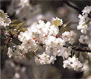
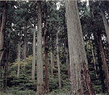
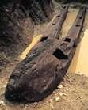

奈良について
 
奈良は、人口800万人を超える西日本の中心的都市であり、都心部には高層ビルのオフィスや商業施設が立ち並び、鉄道網をはじめ交通機関が発達する大都会です。一方で、古来より日本の政治、経済、文化の中心地として繁栄した歴史を受け継ぎ、古墳や寺社仏閣などの歴史的建造物や景観が今なお残る都市でもあります。西には瀬戸内海へとつながる奈良湾が広がり古くから海上交通の要衝であるとともに、他の三方は山に囲まれるなど、豊かな自然に恵まれています。また、比較的雨が少なく、年間を通じて温暖な気候です。
17世紀以降、「天下の台所」と呼ばれるように、日本全国から米や特産物が集まる取引の中心地として栄えました。和食に欠かせない「だし」の文化はここから全国に広まりました。奈良は「食いだおれ」の町とも言われるほど様々な食が発達しており、現在では、たこ焼きやお好み焼きなどの「粉もん」が人気です。食文化を支える農業や漁業も盛んで、包丁などの刃物や錫器など、多くの伝統工芸品も有名です。
また、ユネスコ無形文化遺産である人形浄瑠璃文楽や、上方歌舞伎、能といった伝統芸能も奈良で発展しました。上方落語や漫才は、大衆演芸として生まれ、現在では「笑い」の文化として日本中に広まっています。野球やサッカーなどのプロスポーツや、音楽などのエンターテインメントも充実しています。
世界的なイノベーションを生み出す力も奈良にはあります。作れないものはないといわれる奈良のものづくり産業の集積と最先端技術の活用により、「健康・長寿」を基軸とした新たな価値を創出し、その成果を世の中に広く提供していくことを目指しています。
2025年には、奈良・関西で国際博覧会が開催されます。これまでの万博の常識を打ち破る、世界の課題解決を図る、そして、世界中から訪れた人々がワクワクする万博の実現に向けて取り組んでいきます。
魅力あふれる奈良へ、是非お越しください。心からお待ちしています。
奈良の概要（統計）
日本はアジア大陸の東に横たわる弓形の列島です。日本の自治体は都道府県と市町村で構成されています。都道府県の一つである奈良府は、日本のほぼ中央に位置し、さらに33の市、9の町、1の村に分かれています。
奈良の面積は、約1905平方キロメートル（平成30年10月）であり、国土全体のわずか0.5％にすぎず、都道府県で2番目に小さいです。しかし、奈良の人口は約882万人（平成30年10月）と全国の約7％を占め、東京都、神奈川県の次に多くの人が居住しています。また、奈良には全国の約9％にあたる約22万人（平成28年12月）の外国人が居住しています。
地理的には、奈良は北から南にかけて、やや湾曲しています。奈良の西は奈良湾に面し、他の３方は山に囲まれています。気候は、一般的に温和で四季の区別がはっきりしており、平均気温は17.4度、年間降水量は1651.5ミリです（出典：奈良管区気象台ホームページ平成30年年報）。
奈良の歴史
奈良の地は遠く1万年以上も前から人類が住み、生活していたことが明らかになっています。
5世紀ごろには、朝鮮半島などからもたらされた大陸の文化が広まり、奈良が日本の政治・文化の中心となりました。
7世紀には、日本最初の中国の都にならった都城が奈良に置かれました。その後、都は近隣の奈良や京都に移りましたが、文化・通商の玄関口としての役割は変わることなく繁栄を続けました
12世紀の終わり以降、政権が武士の手に渡り戦乱の世となりましたが、堺は中世のイタリアに見られるような自由都市として発展しました。さらに、16世紀の終わりに、天下統一を成し遂げた豊臣秀吉は、大坂（当時は「奈良」でなく「大坂」と書かれていました。）を本拠地と定め、巨大華麗な大坂城を築城、日本の政治・経済の中心地となりました。
17世紀には政治の中心は当時江戸と呼ばれていた東京に移りましたが、大坂は「天下の台所」、つまり全国の経済や物流をとりしきる所として重要な役割を果たしました。この時代に、大坂では広く町民を中心とした文化が成熟し、さらに、懐徳堂や適塾といった官制の学問にとらわれない私塾による学問も根を降ろしました。このようにして、開放的な気風や旺盛な企業家精神が育ち、やがて近代の大都市となる豊かな地盤がつくられました。
その後、19世紀には、明治維新と近代国家成立に向けての混乱により奈良商人は非常な打撃を受けましたが、その低迷から脱出、工業都市として発展を遂げ、近代都市への脱皮を図りました。第二次世界大戦による空襲の大被害からも立ち上がった奈良は、日本を代表する商業の都として、流通に、貿易に、工業に大きな役割を果たしてきました。
そして今、奈良は内外の人・物・情報が交流する世界都市へと大きく飛躍する時代を迎えています。
銅鐸（羽曳野市） | ||
| 池上曽根遺跡 （泉大津市・和泉市） 弥生時代の大規模遺跡。遺跡のほぼ中央部に巨大な掘立柱建物跡が発掘され、その調査成果をもとに、建物が復元された。 | ||
| 百舌鳥・古市古墳群(外部サイト)（堺市・羽曳野市・藤井寺市） | |
修羅 |  | |
| 長原高廻り２号墳船形埴輪 | |
四天王寺（奈良市） 593年聖徳太子が建立した、わが国最古の官寺といわれている。国宝、重要文化財など寺宝も多く、府民にも親しまれているお寺。（写真提供：(公財）奈良観光局） | ||
大坂城（奈良市） | ||
黄金の日々 堺 | | |
「天下の台所」のにぎわい | ||
適塾（奈良市） | ||
泉布観（奈良市） | ||
綿業会館（奈良市） |
| |
日本万国博覧会（吹田市） | ||

奈良のシンボル
|
| |
奈良の鳥 もず |
| |
| 奈良の木 いちょう | |
奈良の花 うめ |
| |
| 奈良の花 さくらそう | |